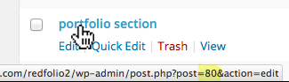

RED:FOLIO
Premium One Page / Multi Page WordPress Theme
by red_sun (Gerda Gimpl)
Hi there... thank you for purchasing RED:FOLIO, a premium One Page / Multi Page WordPress Theme
In this document you will find detailed information on how to use this theme.You can always find a link to the most up to date version of this document in the Theme Options Panel, top right corner.
If you have any questions
If you don't find the answers to your questions in this help file, please send me a message via my user page contact form (this is the only way I can verify legitimate customers).
I will do my best to assist with questions directly related to the theme set up, however please note that theme support is completely voluntary for ThemeForest authors and we do it as appreciation to our customers. Therefore before you contact me, please consider finding an answer to your question in:
- The relevant section of the documentation
- WordPress Codex for general WordPress questions
- Google for general questions
If you like "RED:FOLIO" and want to support my work please rate it on Themeforest!
Thank you!
Installation
Please make sure that you are using the latest version of Wordpress before you install "RED:FOLIO".
Information on how to install Wordpress you can find here .
There are 2 ways to upload the theme:
method 1: wordpress upload function
- Login to your WordPress admin
- Click Appearance >Themes
- Click Add New
- Click Upload Theme, browse your files and find redfolio.zip (Make sure you are not uploading the whole zip file that you've downloaded from Themeforest (including dummy content, license, psd files, readme ...)
- Click Install Now
- Once RED:FOLIO is uploaded, click Activate
method 2: FTP upload
- Unpack the Theme's zip file you have downloaded
- Upload the /redfolio folder to the /wp-content/themes directory in your WordPress installaion on your server
- Login to your WordPress admin
- Click Appearance >Themes
- Look for the RED:FOLIO theme and click Activate
The Theme Options Panel
Once the theme is installed, a new menu page called "Theme Options" will appear on the bottom left of your WordPress administration area.
The Theme Options Panel is divided into the following sections:
GENERAL - Configure the general setup of your theme. Here you can - upload a logo, login logo, favicon and a gravatar, - add custom CSS, a 404 error message and a google analytics code, - choose the copyright text color, make header "sticky", display a search button, set frontpage blog section number of posts and remove all comments from the entire website.
PORTFOLIO - Set Portfolio gutter width, overlay color and overlay opacity.
TYPOGRAPHIE - Select your favorite font or upload one of hundreds of Google Web fonts for headings, set font weight and size, remove links underline.
COLOR - Set the theme color for links, buttons, forms,...
HOME - Set up the home section.
SOCIAL - Set up the twitter section, add facebook and twitter share buttons on posts and portfolio pages, enter the info for your social network accounts to display them in the social section, and optionally also in the footer.
CLIENTS - Upload your client's logos.
CONTACT - Display google maps and a contact form in the contact section / on the contact page.
RECOMMENDED PLUGINS
The following plugins are required to display the relevant sections of the theme:
Contact Form, Google Maps, Page Ordering
- CONTACT SECTION:
for the contact form: Contact Form 7 (and optionally Really Simple Captcha)
for google maps: Basic Google Maps Placemarks - CHANGING ORDER OF FONTPAGE SECTIONS AND PORTFOLIO ITEMS:
Simple Page Ordering
Once the plugin is installed, you can simply drag and drop the frontpage sections and portfolio items items into a certain order. In order to display all items on 1 page, which helps to reorder them, in the top right corner click Screen Options and enter a number at least as high as the total number of items you've created.
All plugins above can be installed by simply going to Appearance > Install Plugins.
Slider
- FULLSCREEN SLIDER: Layer Slider
In order to install Layer Slider, go to Plugins > Add New, click Upload, find the layersliderwp-(versionNr).installable.zip file which is included in the RED:FOLIO download files (make sure you've downloaded 'All files & documentation' from Themeforest) and click Install now. Once the plugin is uploaded click Activate Plugin.
NOTE: If you get the Install Error: Are You Sure You Want To Do This? error message when installing the layerslider zip file via WordPress, it means you have an upload file size limit. Install the plugin via FTP if this happens, or get in touch with your hosting company and ask them to increase the limit.
DEMO CONTENT
If you want a quick start you can import the content from the red:folio demo site (images are replaced with dummy images).
I recommend to install the Contact Form 7 plugin before you install the dummy content, so that the demo content for the contact form gets importet as well. You can do that in Appearance > Install Plugins.
How to install the demo content
- Click Tools > Import
- Click on WordPress
- Install the Importer by clicking Install Now and then Activate Plugin & Run Importer
- Upload the xml file called "redfolio-demo-content-(date).xml", that you can find in the folder "demo content".
- Now assign your posts to an existing user, check the "Download and import file attachments" checkbox and click "Submit".
Recommended next steps
- Go to Settings > Reading and select Front page displays a "static page".Front page: "Home".Posts page: "Blog".
- DISPLAY MENU: Go to Appearance > Menus, select "my menu", scroll down and under Menu Settings > Theme locations, check RED:FOLIO Main Menu and click Save Menu.
- PORTFOLIO SECTION: In order for the portfolio section to display the portfolio categories, you will need to select the portfolio categories: Go to Pages > All Pages, look for the portfolio section and click "Edit", scroll all the way down and select the portfolio categories that you want to display in this section and click Update.
- SOCIAL SECTION: In order to display social icons in the social section, go to Theme Options > Social and enter the URL's to your social profiles.
- CONTACT FORM: If you've installed the "Contact Form 7" plugin before installing the demo content, you should find a contact form called "redfolio-form" in Contact > Contact Forms. Copy the shortcode add add it into Theme Options > Contact > Enter Contact Form 7 Shortcode .
- SECTION BUTTONS: You will need to enter the correct URL for the section buttons. Go To Pages > All Pages, and edit "home section", "portfolio section" and "blog section". Scroll down to SECTION BUTTONS and replace Button 1 URL with the correct URL (change "myurl" to your site's URL).
- CLIENT SECTION: In order to display client logos in the client section, go to Theme Options > Clients , click upload and select logos from the media library or upload your own.
Menu
Create a Menu
- Click Appearance > MENUS
- Click create a new menu .
- Enter a name for your menu and click Create Menu.
- In Menu Settings select "RED:FOLIO Main Menu" and click Save Menu.
- Select menu items from the left column and click "Add to Menu".
- Click on the drop down arrow of a menu item to change the navigation label or if you want to open the menu item in a new window
- Click "Sceen Options" in the top right corner for more options.

One Page
Setting up the Front Page
- Click Pages > Add New.
- Look for Page Attributes on the right side and click on the Template drop-down menu. Select the "Front Page" template.
- Give this page a title, eg. "Front Page", you don't have to include any content. (The title and content will not appear anywhere on the site)
- Click Publish.
- Click Settings > Reading and select Front page displays a static page. Select the page you just created as your Front page and click Save Changes
- Now you can add sections to this page:
How to create a section on the Front Page
- For each section that you want to display on the front page, create a new page:
Click Pages > Add New. - You can give this section a title, eg. "home section" or "portfolio section". (The title will not appear anywhere on the site). You don't have to select a page template.
- Scroll down below the editor, and in the GENERAL box, check the Front Page section checkbox and select a layout
- Now you can optionally select a background color, add a background image with parallax effect (by uploading a Featured Image on the right hand side), enter title and subtitle and create section buttons.
How to add a section to the menu
- Go to Appearance > Menus , select a page from the left column and click "Add to Menu". If you want, you can rename the menu item by clicking on the drop down arrow of the new menu item and changing the navigation label.
How to change the order of sections
- Changing the order how sections appear on the front page requires the Simple Page Ordering plugin.
You can install this plugin in Plugins > Add New. Once the plugin is installed, you can simply drag and drop sections into postion.
Home Image section - (fullscreen image and fade-in text)
- Click Pages > Add New.
- You can give this section a title, eg. "home section". (The title will not appear anywhere on the site). You don't have to select a page template.
- Scroll down below the editor, and in the GENERAL box, check the Front Page section checkbox and select Home Fullscreen Image
- In order to display a background image with parallax effect for this section, upload a Featured Image on the right hand side.
- Under Title and Subtitle > Title text enter a title. It will fade in first.
- Under Title and Subtitle > Subtitle text enter a subtitle. It will fade in second, along with any text that you put into the editor of this page.
- Under Section Buttons enter button text, URL and Color. It will fade in third. If you want to link a button to one of the sections on the front page
Enter the full URL of your website, followed by /#section-80. Replace 80 with the ID of the section you would like to link to.
This is how you find the section ID: Go to Pages > All Pages and hover over the page title of the section you want to link to
 - Click Publish
Home Slider section
STEP 1: CREATE SLIDES
- First you need to install the Layerslider plugin. Click on Recommended plugins in the menu above to find out how to install Layerslider.
- Once the plugin is installed and activated, go to LayerSlider WP > All Sliders and either import sample sliders or start creating your own. Find a demo for the sample sliders here. A documentation for Layerslider is included in the download files as well (layerslider/start_here.html)
- In order to display your slider fullwidth, select your slider and in Slider Settings set Slider width and Slider height to 100% and remove the "Max-width" value.
STEP 2: CREATE HOME SLIDER SECTION
- Click Pages > Add New.
- You can give this section a title, eg. "home slider section". (The title will not appear anywhere on the site). You don't have to select a page template.
- Scroll down below the editor, and in the GENERAL box, check the Front Page section checkbox and select Home Slider.
- Add the Layerslider shortcode into the editor.
- Click Publish
Video section
- Click Pages > Add New.
- You can give this section a title, eg. "video section". (The title will not appear anywhere on the site). You don't have to select a page template.
- Scroll down below the editor, and in the GENERAL box, check the Front Page section checkbox and select Video
- Enter the embed code for your video into the text editor.
Example:<iframe src="//www.youtube.com/embed/E8dUx_dNFX8?rel=0&autoplay=1&showinfo=0&controls=0 " frameborder="0" allowfullscreen></iframe>
- Click Publish
Blog section
- Click Pages > Add New.
- You can give this section a title, eg. "blog section". (The title will not appear anywhere on the site). You don't have to select a page template.
- In the GENERAL box, check the Frontpage section checkbox and select the layout Blog .
- Under SECTION TITLE AND SUBTITLE optionally enter title (eg. "BLOG") and subtitle for this section
- In order to create a section button that links to the blog page, enter the blog pages's full URL into the Button URL field in the SECTION BUTTONS box. The blog page is the one you selected in Settings > Reading > Front Page displays A static page > Posts page.
- Click Publish
- Add blog posts via Posts > Add New
- You can set the number of blog posts to appear in this section in Theme Options > General > Theme Customization
-
How to add a READ MORE button to a blog post:
In order to display a "read more" button, you can use the "more tag". You can find the "more tag" button in the first row of the visual editor.

 If you don't want to split the content, simply put it at the end of the post.
If you don't want to split the content, simply put it at the end of the post.
Portfolio section
STEP 1: CREATE PORTFOLIO CATEGORIES
- Click Portfolio > Portfolio Category.
- Create new menu categories (for example: web, print, video,…) by filling in the name and slug and clicking Add new Portfolio Category.
STEP 2: CREATING PORTFOLIO ITEMS
- Click Portfolio > Add Portfolio Item
- Enter Title (will appear above portfolio item on hover), upload a Featured Image and fill in the Portfolio item settings and select a Portfolio Category.
- If you would like to display a video, simply enter the YouTube URL into the YouTube video field.
- Click Publish.
STEP 3: CREATE PORTFOLIO SECTION
- Click Pages > Add New.
- You can give this section a title, eg. "portfolio section". (The title will not appear anywhere on the site). You don't have to select a page template.
- In the GENERAL box, check the Frontpage section checkbox and select the layout Portfolio .
- Under SECTION TITLE AND SUBTITLE optionally enter title (eg. "PORTFOLIO") and subtitle for this section
- In order to create a section button that links to the portfolio page, enter the portfolio pages's full URL into the Button URL field in the SECTION BUTTONS box. If you haven't already created a porfolio page, add a new page and select the "portfolio" template.
- In the box PORTFOLIO settings, select the Portfolio categories you would like to display in this section.
- Click Publish
- In Theme Options > Portfolio you have the option to select the portfolio item gutter width, overlay color and opacity
SORT PORTFOLIO ITEMS
In order to sort the portfolio items, install the
Simple Page Ordering plugin.
You can do that in Appearance > Install Plugins.
Once the plugin is installed, you can simply drag and drop the portfolio items into a certain order. In order to display all portfolio items on 1 page, which helps to reorder them, in the top right corner click "Screen Options" and enter a number at least as high as the total number of items you've created.
Twitter section
- Click Pages > Add New.
- You can give this section a title, eg. "twitter section". (The title will not appear anywhere on the site). You don't have to select a page template.
- In the GENERAL box, check the Frontpage section checkbox and select the layout Twitter .
- Select a background color or upload a Featured image in order to display it as a background image with parallax effect for this section.
- Click Publish.
- Go to Theme Options > Social and choose the color for the Twitter text and enter the Twitter ID.
This is how you find the Twitter ID:
Go to www.twitter.com and log in, go to your Settings page (by clicking on your profile image up top and clicking Settings), then click Widgets on the left hand side.
→
Click Create New, then select User timeline and click Create widget .
Now look at the URL in your web browser, you will see the ID, which is a long number like this: 554079775447613440.
Social section
- Click Pages > Add New.
- You can give this section a title, eg. "social section". (The title will not appear anywhere on the site). You don't have to select a page template.
- In the GENERAL box, check the Frontpage section checkbox and select the layout Social .
- Select a background color or upload a Featured image on the right hand side in order to display it as a background image with parallax effect for this section.
- Click Publish.
- Go to Theme Options > Social > Social Section and choose a color for the icons and enter the full URL to your social profiles.
Client section
- Click Pages > Add New.
- You can give this section a title, eg. "client section". (The title will not appear anywhere on the site). You don't have to select a page template.
- In the GENERAL box, check the Frontpage section checkbox and select the layout Clients.
- Under SECTION TITLE AND SUBTITLE optionally enter title (eg. "BRANDS AND CLIENTS") and subtitle for this section
- Click Publish.
- Go to Theme Options > Clients and upload your client's logos.
Team section
STEP 1: CREATE TEAM SECTION
- Click Pages > Add New.
- You can give this section a title, eg. "team section". (The title will not appear anywhere on the site). You don't have to select a page template.
- In the GENERAL box, check the Frontpage section checkbox and select the layout Team
- Under SECTION TITLE AND SUBTITLE optionally enter title (eg. "TEAM") and subtitle for this section
- Click Publish
STEP 2: CREATING TEAM MEMBERS
- Click Team > Add Team Member
- Upload a Featured Image and fill in the Team member info.
- Click Publish.
Shop section
This section requires the Woocommerce plugin. You can install this plugin in Appearance > Install Plugins.- Click Pages > Add New.
- You can give this section a title, eg. "shop section". (The title will not appear anywhere on the site). You don't have to select a page template.
- Into the text (not visual!) editor enter the following shortcode:
[recent_products per_page="4" columns="4"]
- In the GENERAL box, check the Frontpage section checkbox and select the layout default
- Under SECTION TITLE AND SUBTITLE optionally enter title (eg. "SHOP") and subtitle for this section
- In order to create a section button that links to the Shop page, enter the Shop pages's full URL into the Button URL field in the SECTION BUTTONS box.
- Click Publish
Contact section
- Click Pages > Add New.
- You can give this section a title, eg. "contact section". (The title will not appear anywhere on the site). You don't have to select a page template.
- If you enter text into the editor, it will display in the right column box.
- In the GENERAL box, check the Frontpage section checkbox and select the layout Contact
- (INFO: the demo version uses color #ffffff as background color for this section)
- Click Publish.
- Under SECTION TITLE AND SUBTITLE optionally enter title (eg. "CONTACT") and subtitle for this section
Adding a contact form to the contact section
- This requires the contact form 7 plugin and optionally the Really Simple Captcha plugin. You can install these plugins in Appearance > Install Plugins
- Once the plugin(s) is (are) installed and activated, go to Contact > Add New click the "Add New" button and set up your contact form:
Enter a title and create form fields.
Example from the theme demo:
[text* your-name watermark "Name*"] [text* your-email watermark "Email*"] [textarea your-message] [captchac captcha-300 bg:#ffffff size:l] [captchar captcha-300] [submit "Send"]
Here you can find more info on how to work with Contact Form 7: Contact Form 7 Docs. - Click Save and copy the shortcode. Now go to Theme Options > Contact and enter the shortcode in the field "Enter Contact Form 7 Shortcode" and click "Save Options".
Adding google maps to the contact section
- In Theme Options > Contact check the Display Google Map checkbox.
- This requires the Basic Google Maps Placemarks plugin. You can install this plugin in Appearance > Install Plugins.
- Once the plugin is installed, go to Settings > Basic Google Maps Placemarks and insert the address info
- You don't need to add any Map Width or Height, it will be set automatically
- (INFO: The theme demo uses all the default values, with a custom address and Zoom 15)
- In order to add a placemark, go to Placemarks > Add New. Enter a title and scroll down to enter a Placemark Address and click Update. Optionally upload the pin image under "Featured Iamge". The red:folio download files include a psd and png file of the pin used in the theme demo.
MULTI PAGE
The theme comes with the following custom page templates:
- Default Template - The default page (includes right sidebar)
- Fullwidth- A page without right sidebar
- Blog Masonry - Blog page with masonry layout
- Blog Masonry with sidebar- Blog page with masonry layout and right sidebar
- Blog 1 column with sidebar - Regular 1 column blog page and right sidebar
- Portfolio - A page that displays all portfolio items
- Team - A page that displays all Team members
- Contact - A page that is ready to display a contact form and google maps
- Front Page - A page that displays all Front Page sections
How to use a template:
- Click Pages > Add New.
- Look for Page Attributes on the right side and click on the "Template" drop-down menu.
- Choose a page template.
- Click the Publish button above.
- Now you can add your new page to your Menu.
Setting up the Front Page
- Click Pages > Add New.
- Look for Page Attributes on the right side and click on the Template drop-down menu. Select the "Front Page" template.
- Give this page a title, eg. "Home", you don't have to include any content. (The title and content will not appear anywhere on the site)
- Click Publish.
- Now you can add the new page to your Menu.
- Click Settings > Reading and select Front page displays a static page. Select the page you just created as your Front page and click Save Changes
- Now you can add front page sections to this page (click on 5. One Page in the menu above, to find out how.).
Setting up the Blog Page
- Click Pages > Add New.
- Look for Page Attributes on the right side and click on the Template drop-down menu. Select the "Default Template".
- You can give this page a title, eg. "News". You don't have to include any content.
- Click Publish.
- Now you can add the new page to your menu .
- Click Settings > Reading and select Front page displays a static page. Select the page you just created as your Posts page and click Save Changes.
- Select the blog layout in Theme Options > General.
- Add blog posts via Posts > Add New
- You can set the number of blog posts to appear in this section in Settings > Reading
-
How to add a READ MORE button to a blog post:
In order to display a "read more" button, you can use the "more tag". You can find the "more tag" button in the first row of the visual editor.
If you don't want to split the content, simply put it at the end of the post.
Setting up the Portfolio Page
STEP 1: CREATE PORTFOLIO CATEGORIES
- Click Portfolio > Portfolio Category.
- Create new menu categories (for example: web, print, video,…) by filling in the name and slug and clicking Add new Portfolio Category.
STEP 2: CREATING PORTFOLIO ITEMS
- Click Portfolio > Add Portfolio Item
- Enter Title (will appear above portfolio item on hover), upload a Featured Image and fill in the Portfolio item settings and select a Portfolio Category.
- If you would like to display a video, simply enter the YouTube URL into the YouTube video field.
- Click Publish.
STEP 3: CREATE PORTFOLIO PAGE
- Click Pages > Add New.
- Look for Page Attributes on the right side and click on the Template drop-down menu. Select the "Portfolio" template.
- You can give this page a title, eg. "Portfolio". You don't have to include any content.
- In the box PORTFOLIO settings, select the Portfolio categories you would like to display on this page.
- Click Publish.
- Now you can add the new page to your menu.
- In Theme Options > Portfolio you have the option to select the portfolio item gutter width, overlay color and opacity
SORT PORTFOLIO ITEMS
In order to sort the portfolio items, install the
Simple Page Ordering plugin.
You can do that in Appearance > Install Plugins.
Once the plugin is installed, you can simply drag and drop the portfolio items into a certain order. In order to display all portfolio items on 1 page, which helps to reorder them, in the top right corner click "Screen Options" and enter a number at least as high as the total number of items you've created.
Setting up the Team Page
STEP 1: CREATE TEAM PAGE
- Click Pages > Add New.
- Look for Page Attributes on the right side and click on the Template drop-down menu. Select the "Team" template.
- You can give this page a title, eg. "Team". You don't have to include any content.
- Click Publish.
- Now you can add the new page to your menu.
STEP 2: CREATING TEAM MEMBERS
- Click Team > Add Team Member
- Upload a Featured Image and fill in the Team member info.
- Click Publish.
Setting up the Shop (WooCommerce) Page
- In Theme Options > GENERAL check the Load WooCommerce stylesheets checkbox.
- This page requires the Woocommerce plugin. You can install this plugin in Appearance > Install Plugins.
- Once the plugin is installed, click "Install WooCommerce Pages".
Now you will find new pages in Pages > All Pages. Change the Template to "fullwidth" for the following pages: Cart, Checkout and My Account.
If you uploaded the images before changing the setttings above, you may have to rebuild your thumbnails. You can do that by running the AJAX Thumbnail rebuild plugin.
- Start creating your Products or start by installing the WooCommerce Dummy Data
- Add the "Shop" (and "Cart", "My Account", ...) page(s) to your menu and add widgets to the "Woocommerce" sidebar.
- If you would like to add a shopping cart icon to the menu in the top bar, install the Woocommerce Menu Bar Cart plugin.
- Find more info on how to work with WooCommerce here
Setting up the Contact Page
- Click Pages > Add New.
- Look for Page Attributes on the right side and click on the Template drop-down menu. Select the "Contact" template.
- You can give this page a title, eg. "Contact".
- If you enter text into the editor, it will display in the right column box.
- Click Publish.
Adding a contact form to the contact page
- This requires the contact form 7 plugin and optionally the Really Simple Captcha plugin. You can install these plugins in Appearance > Install Plugins
- Once the plugin(s) is (are) installed and activated, go to Contact > Add New click the "Add New" button and set up your contact form:
Enter a title and create form fields.
Example from the theme demo:
[text* your-name watermark "Name*"] [text* your-email watermark "Email*"] [textarea your-message] [captchac captcha-300 bg:#ffffff size:l] [captchar captcha-300] [submit "Send"]
Here you can find more info on how to work with Contact Form 7: Contact Form 7 Docs. - Click Save and copy the shortcode. Now go to Theme Options > Contact and enter the shortcode in the field "Enter Contact Form 7 Shortcode" and click "Save Options".
Adding google maps to the contact page
- In Theme Options > Contact check the Display Google Map checkbox.
- This requires the Basic Google Maps Placemarks plugin. You can install this plugin in Appearance > Install Plugins.
- Once the plugin is installed, go to Settings > Basic Google Maps Placemarks and insert the address info
- You don't need to add any Map Width or Height, it will be set automatically
- (INFO: The theme demo uses all the default values, with a custom address and Zoom 15)
- In order to add a placemark, go to Placemarks > Add New. Enter a title and scroll down to enter a Placemark Address and click Update. Optionally upload the pin image under "Featured Iamge". The red:folio download files include a psd and png file of the pin used in the theme demo.
THEME FILES
CSS
The following CSS files are included in the theme:
Style.css (located in: main directory)
Contains: Foundation for the site design. It controls the design structure of the theme. Be careful modifying this file so that you don't break the layout. I recommend making a copy before you edit this file.
If you would like to edit a specific section of the site, simply find the appropriate label in the CSS file, and then scroll down until you find the appropriate style that needs to be edited.
The file is separated into the following sections:
0. CSS RESET
1. MISC
2. TYPOGRAPHY
3. LAYOUT
4. NAVIGATION
5. FOOTER
6. WIDGETS
7. IMAGES
8. BUTTONS
9. PAGINATION
10. COMMENTS
11. FORMS
dynamic-css.php (located in: /css)
Contains: Styles as set in Theme Options Panel
layout-responsive.css (located in: /css)
Contains: responsive layout styles
retina.php (located in: /css)
Contains: styles for retina screens
prettyPhoto.css (located in: /css)
Contains: Styles for the prettyPhoto Lightbox
font-awesome.min.css (located in: /fonts/fontawesome)
Contains: Styles for icon font
shortcodes.css (located in: /css)
Contains: Styles for Shortcodes
admin-style.css and colorpicker.css (located in: /includes/admin/css)
Contains: Design structure for the theme options panel. There is probably no need for you to modify this file.
color.css, divider.css, file.css, heading.css, image.css, oembed.css, plupload-image.css, range.css, select.css, select-advanced.css, slider.css, style.css, taxonomy.css, wysisyg.css, jquery-ui-timepicker-addon.css, jquery.ui.core.css, jquery.ui.datepicker.css, jquery.ui.slider.css and jquery.ui.theme.css (located in: /includes/metaboxes/css and /includes/metaboxes/css/jqueryui)
Contains: Design structure for the metaboxes. There is probably no need for you to modify this file.
Java Script
"RED:FOLIO" loads the following Javascript files:
jquery.easing.js (located in: /js)
Advanced easing options
jquery.fittext.js (located in: /js)
Flexible font size (for big headings) for responsive layouts
jquery.fitvids.js (located in: /js)
Used for fluid width video embeds
jquery.isotope.js (located in: /js)
Masonry portfolio and blog layout and sortable portfolio items
jquery.neatshow.js (located in: /js)
Fade in images beautifully.
jquery.parallax.js and jquery.stellar.js (located in: /js)
Background images with parallax effect
prettyPhoto.js (located in: /js)
Used to display images and multi-media in a "lightbox" that floats overtop of the current web page
jquery.queryloader2.js (located in: /js)
Percentage loader for images
jquery.selectbox.js (located in: /js)
Dropdown menu style
superfish.js (located in: /js)
Jquery improved dropdown menu
jquery.waypoints.js (located in: /js)
Execute a function whenever you scroll to an element (used for menu highlight on One Page)
jquery.waypoints-sticky.js (located in: /js)
Sticky navigation header.
scripts.js (located in: /js)
custom jQuery
colorpicker.js , ofmedialibrary-uploader.js ,options-custom.js ,quicktip_script.js and uislider.js (located in: /includes/admin/js)
Used for the Theme Options Panel
autosave.js , clone.js , color.js , date.js , datetime.js , file.js , file-advanced.js , image.js , image-advanced.js , jquery.validate.js , map.js , oembed.js , plupload-image.js , select-advanced.js , slider.js , taxonomy.js , thickbox-image.js , time.js , validate.js , jquery-ui-timepicker-addon.js , jquery.ui.datepicker.min.js and jquery.ui.slider.min.js (located in: /includes/metaboxes/js and /includes/metaboxes/js/jqueryui)
Used for the custom Meta Boxes
SHORTCODES AND ICONS
SHORTCODES
Using shortcodes is very easy. To use one, create a new post (or edit an existing one), and in the the editor type a shortcode in brackets. You can find a demonstration and the code for all included shortcodes on the Shortcodes page of the theme demo.
Highlight
Highlight 1 uses black text, hightlight 2 white text. If you don't add a color value for the background color, the secondary theme color as set in the Theme Options Panel will be used.
[highlight1 color="#a3d7df"] highlighted text [/highlight1]
[highlight2 color="#a3d7df"] highlighted text [/highlight2]
Round Image
Simply upload your image via the Add Media button and wrap it with the Round Image shortcode. Uploaded image needs to be square (e.g. 300 x 300px)
[round_image]Image Goes Here[/round_image]
Button
Button which uses the secondary theme color as set in the Theme Options Panel:
[button link="http://www.fullURL.com"]Click me![/button]
Button which uses the secondary theme color as set in the Theme Options Panel and opens in a new tab:
[button target="_blank" link="http://www.fullURL.com"]Click me![/button]
Button with custom color and which opens in a new tab:
[button target="_blank" color="#a3d7df"" link="http://www.fullURL.com"]Click me![/button]
Tabs
[redsun_tabs][redsun_tab title="Tab 1"] Tab 1 content [/redsun_tab][redsun_tab title="Tab 2"] Tab 2 content [/redsun_tab][redsun_tab title="Tab 3"] Tab 3 content [/redsun_tab][/redsun_tabs]
Toggle
[toggle title="Toggle title"]
Hidden content
[/toggle]
Dropcaps
[dropcap] First Letter [/dropcap]
Pullquotes
[pullquote_left] Quote text [/pullquote_left]
[pullquote_right] Quote text [/pullquote_right]
Divider
[divider]
Column Shortcodes
Please find a demonstration and the code for the column shortcodes on the Shortcodes page of the theme demo.Icons
RED:FOLIO includes the "Fontawesome" icon font.
This is how you add an icon to your posts and pages:
- Choose your icon from here: Fontawesome
- Add the code as follows (replace "fa-heart" with whatever icon you would like to use):
<i class="fa fa-heart"></i>
Example increase icon size x 5, and use light grey color:<i class="fa fa-heart fa-5x" style="color: #aaa;"></i>
More examples here.
Credits
I've used the following scripts, files, images, icons in this theme:
Changelog
Version 2.03 - Released: 09/13/2015- folder: layerslider and all files within - Added: Newest version of Layerslider.
- folder: fontawesome and all files within - Added: Newest version of Font Awesome icon font.
- file: portfolio-section.php, template-portfolio.php, blog-section.php - Fixed: missing translation ready text.
- file: options.php, social-section.php - Added: new icons to social section / footer: Houzz, Amazon, 500px, Tripadvisor
- file: jquery.prettyphoto.js - Fixed: prettyPhoto XSS fix.
- file: template-frontpage.php, scripts.js, dynamic-css.php, options.php - Added: Option to remove border around home image.
- folder: layerslider and all files within - Added: Newest version of layerslider.
- file: portfolio-section.php, template-portfolio.php, blog-section.php, loop.php, template-blog-style1.php, template-blog-style2.php, template-blog-style3.php - Added: all text translation ready.
- file: class-tgm-plugin-activation.php - Fixed: XSS vulnerability fix.
- file: woocommerce.php, product-searchform.php, functions.php, options.php / folder: woocommere and all files within - Added: WooCommerce plugin support
- file: search.php - Added: Search also in portfolio subtitle field.
- file: twitter-section.php, jquery.twitterpostfetcher.js, functions.php, options.php - Fixed: Twitter section.
- file: scripts.js, functions.php, style.css, layout-responsive.css, portfolio-section.php, template-portfolio.php, team-section.php, blog-section.php, template-blog-style1.php, template-blog-style2.php, template-blog-style3.php, template-frontpage.php, jquery.lazyload.min.js - Fixed: page speed improvements, lazy load images.
- file: scripts.js, template-frontpage.php - Fixed: multiple portfolio sections sorting.
- file: functions.php - Fixed: thumbnail size for video.
- file: template-frontpage.php, options.php, scripts.js - Added: Option to set minimum home title and section title font size for mobile devices.
- file: functions.php - Added: Improvement of child theme support
- file: style.css, layour-responsive.css - Fixed: slider layout.
- file: mobile_detect.php - Fixed: isMobile returns true on desktop after Chrome's update.
- file: options.php, config-meta-boxes.php, portfolio-section.php, template-portfolio.php, search.php - Added: option to link portfolio item to any URL
- file: template-fontpage.php, config-meta-boxes.php, style.css - Added: Video section
- file: scripts.js - Fixed: if portfolio category is selected, only images from that category are shown in lightbox
- file: prettyphoto.css, loader.gif - Added: loading icon when lightbox opens
- file: options.php, dynamic-css.php - Added: option to center client logos
- file: options.php, client-section.php - Added: option to hyperlink
- file: scripts.js, style.css - Fixed: load home image faster. lient logos
- file: archive.php - Fixed: archive template layout issue
- file: options.php, social-section.php - Added: social icons Vimeo, Vine, Soundcloud
- file: portfolio-section.php, template-portfolio.php - Added: Vimeo support
- file: portfolio-section.php, template-portfolio.php, prettyphoto.css, scripts.js - Added: Show title and previous & next arrows in portfolio lightbox
- file: functions.php, header.php - Fixed: mobile menu
- Initial release.
FAQ & Troubleshooting
- Portfolio item opening a 404 Error page
- How to update a theme
- Theme Installation Error “The package could not be installed. The theme is missing the style.css stylesheet.”
There is a very easy fix for this issue: Simply go to Settings > Permalinks and click Save Changes.
Start by logging into Themeforest with the account that you've used to purchase your theme. Click Downloads and re-download the theme you've purchased. You will automatically get the newest version.
Go to you WordPress admin and click Appearance > Themes . Activate any different theme, choose delete files for the old red:folio theme and then upload the new theme and activate it. If you attempt to upload a new version of a theme without deleting the old version first, the theme install will fail.
Deleting the old theme may seem scary, but you are not going to loose any of your content or theme settings. You will only lose the changes that you've made directly to the theme files. These changes will need to be made again to the new files.
If you are still uncomfortable deleting the old theme, you may use a plugin, like for example Easy Theme and Plugin Upgrades to automate backing up your current theme and uploading the new version. In case something goes wrong, you can simply change back to the old theme.
Make sure you are not uploading the whole zip file that you've downloaded from Themeforest (including dummy content, license, psd files, readme ...) but only the redfolio.zip file.